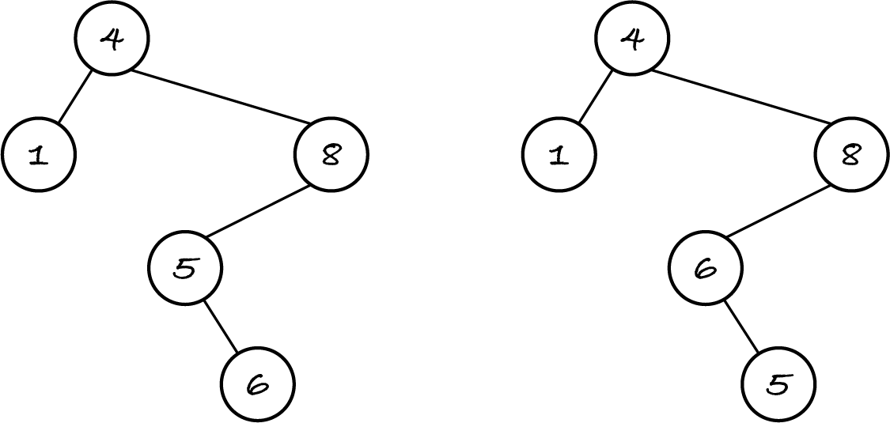
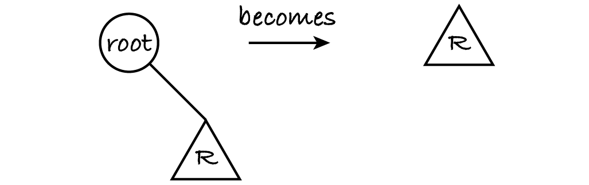
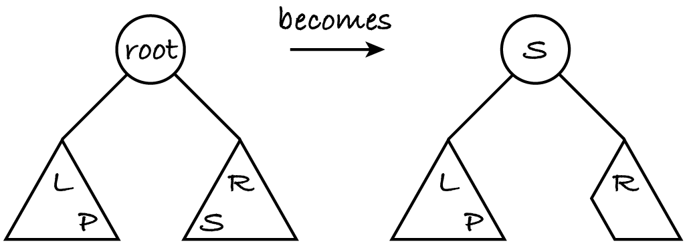

16.4. Binary search trees
A binary search tree (BST) is a sorted binary tree, which allows us to find items using binary search instead of exhaustive search. In a BST, all items in the left subtree come before the root item, which in turn comes before all items in the right subtree. (This is the ordering property of BSTs.) What ‘comes before’ means depends on the problem at hand. Both subtrees are BSTs too, so that all items are sorted. The next figure shows two binary trees with integers.
If ‘comes before’ means ‘less than’, then the tree on the left is a BST and the other one isn’t because 5 is less than 6 but isn’t in the left subtree of 6. If ‘comes before’ means ‘greater than’, then neither tree is a BST.
If the items in a BST are key–value pairs and the keys are unique, then a BST can be used as the data structure for the map ADT. The keys must be comparable, otherwise the binary tree wouldn’t be a BST. Like in the chapter on sorting, I’ll keep BST items in ascending order of keys. A descending order only requires reversing the comparison operator in the following algorithms.
We’ll use the same Tree class as before, but each item will be a key–value pair, represented by a tuple. To make the code more readable I define two constants to index the tuple.
[1]:
%run -i ../m269_tree
KEY = 0
VALUE = 1
I use the left-hand tree in Figure 16.4.1 to test the map operations. The values are irrelevant for the map operations so I’ll keep drawing BSTs with the keys only, but I need to add values for the algorithms to work. To keep the example short, the BST will map Arabic to Roman numerals.
[2]:
I = (1, "I")
IV = (4, "IV")
V = (5, "V")
VI = (6, "VI")
VIII = (8, "VIII")
one = join(I, Tree(), Tree())
six = join(VI, Tree(), Tree())
bst = join(IV, one, join(VIII, join(V, Tree(), six), Tree()))
16.4.1. Search
Since a BST is sorted, a binary search, with the root item being the equivalent of the middle item in sequences, can be used for two map operations: membership (check if a key exists) and lookup (get the value for a given key).
To check if a given key exists, we compare it to the root’s key. If the keys differ, the binary search proceeds recursively on the left or right subtree depending on whether the given key is smaller or larger than the root’s key, respectively.
[3]:
def has(tree: Tree, key: object) -> bool:
"""Return True if and only if a node of tree has the key.
Preconditions: tree is a BST
"""
if is_empty(tree):
return False
elif tree.root[KEY] == key:
return True
elif tree.root[KEY] < key:
return has(tree.right, key)
else:
return has(tree.left, key)
has(bst, 2)
[3]:
False
[4]:
has(bst, 6)
[4]:
True
Like binary search on sequences, binary search on BSTs is a tail-recursive decrease-and-conquer algorithm with two base cases. However, whereas binary search on sequences always reduces the search space by half, binary search on BSTs reduces it by a variable amount: the left and right subtrees may not have the same size, as the examples show. I’ll look at the complexity of binary search on BSTs in the next section.
Similar to what happened with hash tables, another map ADT implementation, if we directly access and modify a key stored in the BST, we may break the ordering property and the membership operation won’t find it anymore. For example, if key 6 is replaced with key 10, the tree is no longer a BST: the algorithm will search for 10 in the right subtree of 8 and not find it.
Exercise 16.4.1
Implement the lookup operation.
[5]:
from algoesup import test
def lookup(tree: Tree, key: object) -> object:
"""Return the value associated to the key.
Preconditions: tree is a BST and has the key
"""
pass
lookup_tests = [
('key in leaf', bst, 1, 'I'),
('key in root', bst, 4, 'IV'),
('key in other', bst, 5, 'V')
]
test(lookup, lookup_tests)
Exercise 16.4.2
Does any DFS or BFS traversal of a BST produce the items in ascending key order?
Exercise 16.4.3
In a BST, the first and last items in sorted order are in the left- and right-most nodes, respectively. For example, the smallest key in the example is 1 because one can’t go further left from that node and the largest key is 8 because one can’t go further right from that node.
Implement the following function recursively or iteratively. Add any necessary preconditions. Run both tests.
[6]:
def smallest(tree: Tree) -> object:
"""Return the item in the tree with the smallest key.
Preconditions: tree is a non-empty BST
"""
pass
[7]:
smallest(bst) == I
[8]:
smallest(six) == VI # this tree has a single node
16.4.2. Add node
The map ADT’s associate operation adds a new key–value pair or replaces the existing value.
Adding a node requires finding where it should be and adding it there. Here’s a visualisation of how a BST is created from an unsorted sequence, by adding one item at a time. First we find where the key should be, using binary search. If we reach an empty subtree, we put a new leaf there with the given item. If we reach an existing node, we replace its value.
[9]:
def associate(tree: Tree, key: object, value: object) -> None:
"""Associate the value to the key in the tree.
Preconditions: tree is a BST
Postconditions:
- if there's a node with the key, replace its value with the given one
- otherwise, add the key-value pair to the tree
"""
# Base case: if tree is empty, create a leaf
if is_empty(tree):
tree.root = (key, value)
tree.left = Tree()
tree.right = Tree()
# Base case: if the key is in the root, replace the value
elif tree.root[KEY] == key:
tree.root = (key, value)
# Recurrence relation: add/replace in the appropriate subtree
elif tree.root[KEY] < key:
associate(tree.right, key, value)
else:
associate(tree.left, key, value)
Like for linked lists, inserting a node has the same complexity as searching: the insertion itself takes constant time once the place is found because no items are shifted, unlike inserting in arrays. Let’s test the operation.
[10]:
write(bst, 0) # this is the left tree in Figure 16.4.1
(4, 'IV')
(1, 'I')
EMPTY
EMPTY
(8, 'VIII')
(5, 'V')
EMPTY
(6, 'VI')
EMPTY
EMPTY
EMPTY
Adding a node with key 2 will put it as the right child of 1.
[11]:
associate(bst, 2, "II")
write(bst, 0)
(4, 'IV')
(1, 'I')
EMPTY
(2, 'II')
EMPTY
EMPTY
(8, 'VIII')
(5, 'V')
EMPTY
(6, 'VI')
EMPTY
EMPTY
EMPTY
16.4.3. Remove node
The map operation to delete an item has to first search for its key. At that point, we have a tree with a left subtree L, a right subtree R and the item to be removed in the root. We have to replace this old BST by a new BST without the root. We can’t simply remove the root: that would lead to two disconnected subtrees. We must think what to do case by case.
If the root is a leaf, i.e. L and R are empty, then the new tree is empty.
If L is empty, then the new tree is simply R, and vice versa.
Note that if R is empty, we have the same situation as for removing a leaf, so we can treat all these cases equally: if one subtree is empty, the new tree is the other subtree.
Finally, consider the case where neither subtree is empty. We must replace the old root by a node that keeps the ordering property: the key must come after the keys in the left subtree but before those in the right subtree. There are only two possible choices: the predecessor node, which has the key that comes immediately before the root’s key and the successor node, with the key immediately after the root’s key. If you think of a sorted sequence like (1, 2, 5, 6, 9), and we want to remove the 5, the only numbers that can take its place are 2, the predecessor of 5, or 6, the successor of 5. We cannot put any other number in place of the 5 as that would break the sorted order.
Where in the tree is the predecessor of the root? Alternatively, where’s the successor?
The predecessor of the root is in the left subtree, by definition of a BST. Since the predecessor comes immediately before the root, it has the largest key in the left subtree, so it’s the right-most node of the left subtree. Vice versa, the successor is the left-most node in the right subtree.
After putting the predecessor (or the successor) in place of the root, we have to remove it from its subtree, making a recursive call.
You already implemented the operation to obtain the smallest item in a tree (what a coincidence!), so we’ll use it to determine the root’s successor. The next figure shows the successor s replacing the root, while the predecessor p stays in its right-most place of the left subtree.
The successor has no left child, otherwise it wouldn’t be the smallest key in the right subtree. Therefore, removing the successor falls into the base case above (one subtree is empty) and takes constant time (once we find it). The same applies if we had decided to replace the root by its predecessor, which has no right child.
To sum up, removing a node does three searches in the worst case: find the node to be removed and find its successor (or predecessor) twice, first to copy it to the root, then to remove it. So deletion also has the same complexity as searching. I’ll come back to this in the next section.
[12]:
def smallest(tree: Tree) -> object:
"""Return the item in the tree with the smallest key.
Preconditions: tree is a non-empty BST
"""
while not is_empty(tree.left):
tree = tree.left
return tree.root
def remove(tree: Tree, key: object) -> None:
"""Remove the tree's node with the key.
Do nothing if there's no such node.
"""
if is_empty(tree):
pass # key not found
elif tree.root[KEY] < key:
remove(tree.right, key)
elif key < tree.root[KEY]:
remove(tree.left, key)
else: # key found: it's in the root
if is_empty(tree.left): # replace tree with right subtree
tree.root = tree.right.root
tree.left = tree.right.left
tree.right = tree.right.right
elif is_empty(tree.right): # replace tree with left subtree
tree.root = tree.left.root
tree.right = tree.left.right # note different order
tree.left = tree.left.left # of assignments
else: # replace root with successor
tree.root = smallest(tree.right)
remove(tree.right, tree.root[KEY])
Let’s remove the node that was added above:
[13]:
remove(bst, 2)
write(bst, 0)
(4, 'IV')
(1, 'I')
EMPTY
EMPTY
(8, 'VIII')
(5, 'V')
EMPTY
(6, 'VI')
EMPTY
EMPTY
EMPTY
If we remove the root 4, it’s replaced by its successor 5, which in turn ‘promotes’ its right subtree, with root 6, one level up:
[14]:
remove(bst, 4)
write(bst, 0)
(5, 'V')
(1, 'I')
EMPTY
EMPTY
(8, 'VIII')
(6, 'VI')
EMPTY
EMPTY
EMPTY